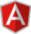
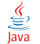
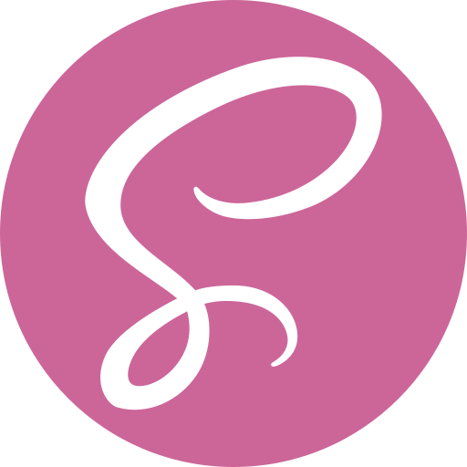

Minhas habilidades

Angular

Java
Wordpress
Spring Boot
Typescript
Git
VSCode

SCSS
_____ Desenvolvedor Fullstack
Wagner Caetano
Olá, tudo bem ??
Bem vindo ao meu website
fique a vontade para me conhecer :D
scroll down
Minha trajetória
Experiência
3 anos
Aws Certied Practioner
Engenheiro de software pleno
Meus estudos de programação começaram na Cotuca, uma escola técnica em Campinas, onde fiz um curso de 2 anos aprendendo Java, .NET, SQL, Python, e um pouco de Arduino, além de outras tecnologias.
Depois de terminar esses 2 anos, tentei alguns processos de estágio para entrar em diferentes empresas. Eventualmente entrei no CI&T como Estagiário, de 1200 participantes fui um dos 90 que entrou.
No meu primeiro ano como estagiário trabalhei em uma equipe da Sulamerica, cliente da CI&T, onde aprendi as melhores práticas de desenvolvimento de software, Spring Boot, Angular, Unit Testing, Component Testing, alguns termos e conhecimentos sobre o mercado em em geral.
Atuei em um produto para agendamento de consultas de pacientes com médicos, através de um App, uma infraestrutura de microsserviços criada específica para este fluxo, e também uma plataforma web angular onde o auxiliar do médico poderia escolher o melhor horário para o paciente e para o médico.
Após quase dois anos trabalhando na Sulamerica, mudei para um dos maiores bancos nacionais do Brasil, que também é cliente da CI&T, desde então venho trabalhando com LGPD e dados cadastrais em um produto para o banco.
Minhas habilidades
Angular
Java
Wordpress
Spring Boot
Typescript
Git
VSCode
SCSS